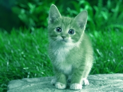

Команда Calculations (Вычисления) в Corel Photo-Paint
Этот урок я решил написать как бы в дополнение к разделу, который выложен здесь. Наверно тему урока можно скорее было бы назвать "Использование команды Calculations (Вычисления) при изучении каналов" или типа того. В любом случае, этот урок надеюсь будет многим полезен.
Вообще, с помощью команды Calculations (Вычисления) можно выполнять самые разнообразные манипуляции, не только с целью изменения или коррекции изображений, но также и для изучения каналов. В отличие от Photoshop, в Photo-Paint это единственная команда, которая может манипулировать каналами (я не беру в расчет фильтр Channel Mixer (Смешивание каналов)). Однако возможностей этой команды достаточно, чтобы выполнять практически любые задачи связанные с каналами.
Вы когда-нибудь задумывались, как формируется цвет при взаимодействии каналов или как выглядит тот или иной канал, когда два других пустые? Можно сказать, что это просто сделать с помощью докера Channels (Каналы), но мы воспользуемся командой Calculations (Вычисления).
Давайте сравним то, что мы увидим в зависимости от выполняемых действий. Начнем знакомство с красного канала (хотя можно было начать и с любого другого).
На рис. 1. показано исходное изображение.
Посмотрим сначала, как будет выглядеть красный канал при просмотре, с помощью докера Channels (Каналы). Откройте докер Channels (Каналы) и нажмите комбинацию клавиш Alt + 1 или щелкните на красном канале, чтобы видимым остался только красный канал (рис. 2).
Как вы сами догадались, в окне Options (Параметры), установлен флажок Tint screen color channels (Использовать оттенки для каналов цвета на экране).
Можно было бы сбросить этот флажок в окне Options (Параметры), чтобы увидеть красный канал в оттенках серого, но мы сделаем иначе. Разобьем изображение на каналы. Выполните команду Image > Split Channels to > RGB (Изображение > Разбить каналы на > RGB). Photo-Paint создаст три отдельных документа в оттенках серого, соответствующих каждому каналу: Red-0.CPT; Green-0.CPT; Blue-0.CPT. На рис. 3 представлены все три канала в оттенках серого.
 в Corel Photo-Paint")
На рис. 3, слева-направо: красный, зеленый и синий каналы. Изображения уменьшены.
Обратите внимание, что в красном канале, красный экскаватор и ковши гораздо ярче, чем в зеленом и синем канале. Можно сказать, что это есть в каком-то смысле "ключевой момент" для понимания каналов. Красный цвет в красном канале будет самым ярким. Если бы экскаватор был, например зеленым, он был бы самым ярким в зеленом канале.
Те, кто уже более или менее знаком с каналами, могут возразить, что ничего необычного в этом нет. Но давайте посмотрим, как будет выглядеть изображение, если синий и зеленый каналы будут пустыми. Чтобы выполнить такой эксперимент в Photo-Paint, необходима помощь команды Calculations (Вычисления). Хотя можно такое сделать и несколько другим способом.
Но прежде, чем мы выполним свой план, сделаем меленький эксперимент в диалоговом окне Channel Calculations (Вычисления над каналами) для первого знакомства с ним.
Выполните команду Image > Calculations (Изображение > Вычисления). В появившемся диалоговом окне Channel Calculations (Вычисления над каналами) установите настройки, как на рис. 4.
На рис. 4 показаны настройки в диалоговом окне, для создания копии красного канала.
Здесь есть парочка нюансов при работе с командой Calculations (Вычисления). По идее, чтобы создать копию красного канала в новом файле, достаточно было бы указать в области Source 1 (Источник 1) красный канал, а в области Destination (Назначение) – новый файл и красный канал. Но не тут-то было… Photo-Paint не позволит вам ничего сделать, если вы не укажите Source 2 (Источник 2). Поэтому нам ничего не остается, как в области Source 2 (Источник 2) также указать красный канал. В раскрывающихся списках Image (Изображение) естественно указываем файл с фотографией экскаватора.
Второй неприятный момент, который поджидает нас – это возможность выбрать в раскрывающемся списке Channel (Канал) области Destination (Назначение) только серый канал. Photo-Paint не предоставляет возможности создать новый файл и сразу же поместить в него копию красного канала.
После нашего «маленького эксперимента» с диалоговым окном Channel Calculations (Вычисления над каналами) сделаем теперь все как нужно.
1. Создайте новый пустой документ с такими же размерами и разрешением, как исходное изображение. В нашем случае, изображение с экскаватором имеет размеры 742х499 px и разрешение 72 dpi. В качестве цвета фона, установите белый цвет. Photo-Paint создаст новый файл под названием Untitled-1 (Безымянный 1).
2. Выполните команду Image > Calculations (Изображение > Вычисления). В появившемся диалоговом окне Channel Calculations (Вычисления над каналами) установите настройки, как на рис. 5.
По умолчанию Photo-Paint не показывает в диалоговом окне Channel Calculations (Вычисления над каналами) результат своих действий и не обновляет его при изменении параметров. Поэтому необходимо каждый раз нажимать кнопку Preview (Просмотр), чтобы увидеть в области просмотра вносимые изменения.
Обратите внимание, как и в предыдущем случае, значения в областях Source 1 (Источник 1), Source 2 (Источник 2) и Method (Метод) я оставил без изменения. А в области Destination (Назначение) указываем вновь созданный файл Untitled-1 (Безымянный 1) и в списке Channel (Канал) становится доступным красный канал.
После нажатия в окне кнопки ОК, Photo-Paint выведет диалоговое окно с предупреждением (рис. 6).
Данное предупреждение гласит: «Вычисления над каналами не записываются и не могут быть внесены в список отмены файла Безымянный 1. Продолжить?» Этот факт иногда приходится учитывать, поскольку отменить это действие не удастся. Поэтому необходимо либо сохранять файл перед применением этой команды или делать копию, или дубликат.
Новый файл с копией красного канала показан на рис. 7. Как вам такой вид изображения?
Наверняка многие не ожидали увидеть его таким. Когда вы загляните в докер Channels (Каналы) файла Untitled-1 (Безымянный 1), то обнаружите, что синий и зеленый каналы пусты. Почему так происходит? Потому что в этом случае мы видим максимум зеленого и синего света. Максимум красного цвета будет в тех местах, где красный канал пуст.
Сделаем небольшое «отступление от темы», оставив на некоторое время в покое команду Calculations (Вычисления) и разберемся с каналами.
Если вы пощелкаете в докере Channels (Каналы), то увидите, что пустые зеленый и синий каналы выглядят, как «чистый лист бумаги», т. е. вы увидите пустое белое изображение (как выглядит красный канал, вы уже знаете).
Пока все это звучит еще не очень понятно? Маленькое упражнение поможет вам легко понять то, что только что было сказано.
1. Щелкните в докере Channels (Каналы) на названии красного канала, чтобы сделать его активным.
2. Выберите на панели Toolbox (Набор инструментов) инструмент Paint (Кисть). Установите в качестве цвета краски белый цвет. Закрасьте снег кистью (рис. 8). В данном случае не нужно проявлять скрупулезность в закрашивании, т. к. мы сейчас не преследуем цель сделать что-то реалистичное или красивое.
Пара слов о том, что мы только что сделали. Т. к . нами было объявлено, что максимум красного будет в тех местах, где красный канал пуст, то мы искусственно сделали «пустым» участок со снегом, закрасив его белым, т. к. «пустоте» соответствует чистый белый цвет в канале.
3. Проделаем с помощью команды Calculations (Вычисления) те же действия с зеленым и синим каналами, т. е. скопируем их из изображения с экскаватором в файл Untitled-1 (Безымянный 1). Выполните команду Image > Calculations (Изображение > Вычисления) и в диалоговом окне Channel Calculations (Вычисления над каналами) установите параметры по аналогии с тем, как было показано на рис. 5. Естественно, что в этом случае укажите сначала зеленый канал, а потом синий.
В итоге получится изображение, как на рис. 9.
Это небольшое упражнение и дает нам ответ, почему красный канал на рис. 7 выглядит таким. Из-за того что синий и зеленый каналы в этом случае давали максимум зеленого и синего (они были пустыми).
Теперь можно постепенно разобраться, как формируется цвет с помощью каналов. Давайте продолжим наши изыскания в этом направлении. Если мы изменим наш эксперимент и после закраски снега в красном канале (рис. 8) зальем черным цветом синий канал (а зеленый канал по-прежнему пуст), то получим вполне предсказуемый результат – снег станет желтым (рис. 10).
Как видите, команда Calculations (Вычисления) с успехом может применяться в «учебном процессе». Никаким другим способом в Photo-Paint нельзя было бы копировать каналы из одного изображения в другое и так свободно манипулировать с ними.
Продолжим наше параллельное изучение каналов и команды Calculations (Вычисления). На рис. 11 показано исходное изображение (сильно уменьшенное).
Здесь мы видим замечательный вид листьев с застывшей каплей воды на одном из них. Естественно в этом изображении «царит» зеленый цвет. Нам не нужно даже прибегать к рассмотрению отдельных каналов. Вы теперь с уверенностью можете сказать, что самый светлый канал – зеленый.
Но в отличие от предыдущего примера, посмотрим, что произойдет при замене каналов и как это реализовать с помощью команды Calculations (Вычисления). В данном примере мы поменяем местами синий канал и зеленый.
1. Создайте новый документ с белым фоном. Размер и разрешение, как в исходном изображении. В данном случае 1600х1200 px и разрешением 72 dpi.
2. Выполните команду Image > Calculations (Изображение > Вычисления). В диалоговом окне Channel Calculations (Вычисления над каналами) в качестве Source 1 (Источника 1) и Source 2 (Источника 2) выбираем красный канал. В списке Method (Метод) выбираем вариант Normal. В области Destination (Назначение), в списке Image (Изображение) выбираем файл Untitled-1 (Безымянный 1), а в списке Channel (Канал) указываем красный канал. Щелкните ОК, для завершения команды.
3. Снова выполните команду Image > Calculations (Изображение > Вычисления). Но теперь в качестве Источников выберите зеленый канал, а в качестве канала назначения – синий.
4. Третий раз выполните команду Image > Calculations (Изображение > Вычисления). В качестве Источников выберите синий канал, а в качестве канала назначения – зеленый.
Результат показан на рис. 12.
Думаю, что нет теперь надобности разъяснять почему так изменилось изображение. Т. к. мы информацию зеленого канала поместили в синий, а зеленый канал был самым светлым, то после замены, самым светлым стал синий канал. Естественно изображение «радикально посинело».
Теперь рассмотрим пример увеличения контраста с помощью команды Calculations (Вычисления). Должен оговориться, что данный метод срабатывает не всегда удачно или лучше сказать, не всегда в полной мере оправдывает наши ожидания. Все зависит от исходного изображения и поставленной задачи. В качестве исходного изображения будем использовать ту же картинку с листьями (рис. 11). Вызовите диалоговое окно Channel Calculations (Вычисления над каналами) выполнив команду Image > Calculations (Изображение > Вычисления). В окне установите в качестве Source 1 (Источника 1) и Source 2 (Источника 2) зеленый канал. В списке Method (Метод) выберите вариант Overlay. В качестве канала назначения выберите также зеленый. В итоге изображение станет более контрастным (рис. 13).
Сравнивая рис. 11 и 13 видно, что тени стали более глубокими и контраст в местах перехода от света к тени стал более резким.
Данный подход часто применяется при создании масок, т. к. увеличение контраста между нужными участками изображения, облегчает их создание. Естественно, в каждом конкретном случае выбираются соответствующие каналы и режим наложения в списке Method (Метод).
В некоторых ситуациях возникает необходимость создания в файле исходного изображения копии какого-либо канала. В Photoshop эта операция реализуется довольно просто, чего нельзя сказать о Photo-Paint. Это не означает конечно, что эта задача не по зубам для Photo-Paint. Для этого просто необходимо сделать несколько дополнительных телодвижений. Было бы логично, если бы разработчики предусмотрели такую возможность прямо в докере Channels (Каналы). Но увы… Чтобы создать копию канала в Photo-Paint, необходимо опять же прибегнуть к помощи команды Calculations (Вычисления).
Для создания копии канала в одном файле:
1. Откройте необходимое изображение. Для некоторой конкретизации описываемых действий, назовем гипотетический файл изображения, Картинка-1.
2. Выполните команду Image > Calculations (Изображение > Вычисления).
3. В диалоговом окне Channel Calculations (Вычисления над каналами), в областях Source 1 (Источник 1) и Source 2 (Источник 2) выберите в списках Channel (Канал) выберите нужный канал (канал, копию которого вы хотите сделать).
4. В области Method (Метод), в раскрывающемся списке выберите режим Normal (Среднее).
5. В области Destination (Назначение), в списке Image (Изображение) выбираем файл Картинка-1, а в списке Channel (Канал) указываем New Channel (Новый канал). Щелкните ОК.
6. В докере Channels (Каналы) щелкните на названии любого канала.
Последний шаг при копировании канала необходим для того, чтобы Photo-Paint обновил информацию о каналах в докере Channels (Каналы) и новый канал стал видимым. По непонятным причинам, такое обновление не происходит автоматически.
Команда Calculations (Вычисления) позволяет создавать копию канала не только в пределах одного изображения, но и копировать канал из одного изображения в другое. В этом случае в целевом файле будет создан альфа-канал. Порядок действий остается тем же, но на шаге 5, в списке Image (Изображение) области Destination (Назначение), выбираем файл другого изображения.
Чтобы в качестве выделения в вычислениях использовалась доступная область выделения открытого изображения, либо канал открытого изображения установите в окне Channel Calculations (Вычисления над каналами) флажок Use mask from (Использовать маску из). В случае установки этого флажка, становятся доступными еще два раскрывающихся списка: Image (Изображение) и Channel (Канал), а также еще один флажок Invert (Инвертировать). Если посмотреть в список Channel (Канал), то вполне естественным выглядит наличие там пункта Mask (Маска), но для начинающих пользователей может стать непонятным, как можно использовать в качестве маски один из каналов. Но достаточно вспомнить, что маска, как и канал является изображением в оттенках серого, как становится понятным механизм использования канала в качестве маски. Более яркие области канала менее защищены от изменений, а более темные практически останутся без изменений. Давайте рассмотрим это «явление» на примере.
В данном примере нас не сильно будет волновать результат, а больше интересовать, как Photo-Paint работает с каналом в качестве маски. На рис. 14 показано исходное изображение.
Анализ каналов данного изображения показывает, что в красном канале котенок самый светлый, а синий канал самый темный. Попробуем «затемнить» красный канал, добавив к нему информацию из синего канала. Но мы дополнительно усилим затемнение, выбрав в списке Method (Метод) режим наложения Multiply (Умножение).
1. Выполните команду Image > Calculations (Изображение > Вычисления). В качестве Source 1 (Источника 1) выберите красный канал, а в качестве Source 2 (Источника 2) синий канал. В списке Method (Метод) установите режим наложения Multiply (Умножение). В области Destination (Назначение), выбираем файл этого же изображения и красный канал. Нажимаем ОК (рис. 15).

Действия выполненные в этом пункте служат для того, чтобы вы сначала увидели результат работы команды Calculations (Вычисления) без применения маски. И этот результат оказался вполне прогнозируемым, в изображении появился некоторый оттенок зеленовато-голубого цвета и стал заметней избыток зеленого. Это является следствием того, что мы уменьшили яркость красного канала, а количество синего и зеленого осталось без изменения.
2. Нам потребуется вернуть изображение к исходному состоянию. Памятуя, что отменить действия команды Calculations (Вычисления) нельзя, воспользуемся командой File > Revert to Saved (Файл > Вернуть к сохраненной версии). Теперь сделаем то же самое, что и на шаге 1, но установим флажок Use mask from (Использовать маску из). В списке Image (Изображение) выберем исходный файл, а в списке Channel (Канал) красный канал. Щелкните ОК (рис. 16).
Сравнивая рис. 156 и 16 видно, что разница столь незначительна, что ее просто не видно. Может возникнуть подозрение, что использование канала в качестве маски, это никому не нужная выдумка. Но ответ лежит на поверхности. Взглянув на красный канал, мы увидим, что он в большей части изображения довольно светлый, а значит и маска мало что защищает от изменений.
Но давайте не будем спешить с однозначными выводами…
3.Вернитесь еще раз к сохраненной версии файла. Выполните действия, как в п.п. 1 и 2, но дополнительно установим флажок Invert (Инвертировать) справа от списка Channel (Канал), в нижней части окна. Снова щелкнем ОК (рис. 17).
Теперь разница видна налицо. Сравнивая исходное изображение на рис. 14 и результат на рис. 17 заметно изменение травы, она стала зеленее и шерсть у котенка тоже изменила оттенок.
А вот разница между результатами на рис. 16 и 17 очень разительная. Почему так? Потому что после инвертирования маски, большая часть красного канала стала более защищенной от изменений.
Чтобы убедиться, что яркость канала напрямую влияет на степень маскирования, обратимся к более темному – синему каналу. Проделайте то же самое, но в качестве маски укажите синий канал. При этом флажок Invert (Инвертировать) не устанавливайте. Давайте теперь сравним результаты (рис. 18).
 в Corel Photo-Paint")
На рис. 18: результат использования в качестве маски синего канала (слева) и красного (справа).
На рис. 18 справа то же самое, что и на рис. 16. Как видите, использование в качестве маски (без инвертирования) синего канала дало совершенно другой результат. Потому, что синий канал гораздо темнее красного, а значит и созданная из него маска сильней защищает изображение от изменений.
Установка флажка Use all channels (Использовать все каналы) служит для использования всех каналов, как исходных изображений, так и результирующего изображения.
 в Corel Photo-Paint")
К сожалению не получилось разместить весь урок сразу, придется его закончить в виде сообщения :)
Итак, продолжим... (нумерация рисунков теперь пойдет сначала)
Давайте в заключение рассмотрим еще пример использования команды Calculations (Вычисления) используя наши знания о влиянии яркости в каналах на цвет в изображении. На этот раз мы применим команду Calculations (Вычисления) для придания оттенка в фото. Исходное изображение показано на рис. 1.
Изображение сделано в «стиле черно-белого фото». Я хочу выполнить что-то наподобие тонирования. Придать снимку оранжевый оттенок. Добавить такой оттенок можно увеличив количество красного и зеленого цвета. Мы теперь знаем, что для этого необходимо – увеличить яркость красного и зеленого каналов. Но яркость красного канала надо увеличить сильней, чем зеленого. Приступим…
1. Выполните команду Image > Calculations (Изображение > Вычисления). В качестве Source 1 (Источника 1) и Source 2 (Источника 2) выберите красный канал. В раскрывающемся списке Method (Метод) установите режим наложения Add (Добавить). В области Destination (Назначение) также выберите красный канал. Щелкните ОК (рис. 2).
2. Выполните команду Image > Calculations (Изображение > Вычисления) еще раз. Но теперь в качестве Source 1 (Источника 1) и Source 2 (Источника 2) выберите зеленый канал. В раскрывающемся списке Method (Метод) установите режим наложения Screen (Экран). В области Destination (Назначение) выберите зеленый канал. Щелкните ОК (рис. 3).
3. Результат получился почти таким, как я и хотел, но я решил немного усилить эффект тонирования. Для этого я воспользовался фильтром Brightness/Contrast/Intensity (Яркость/Контрастность/Интенсивность). Выполните команду Adjust > Brightness/Contrast/Intensity (Настройка > Яркость/Контрастность/Интенсивность). В окне фильтра установите значения, как на рис. 4.
Результат показан на рис. 5.